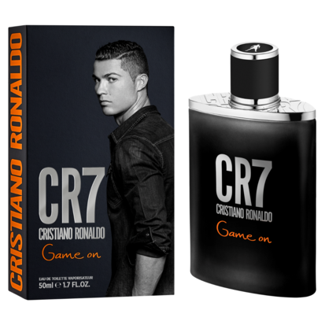
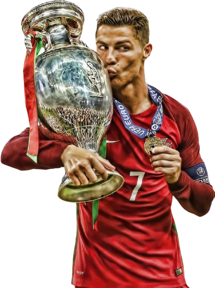
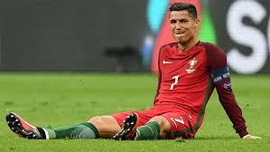

Cristiano Ronaldo
El perfume de Cristiano Ronaldo está arrasando: duradero e ideal para diario
Este perfume es duradero, fresco y ligero al mismo tiempo, lo que lo hace perfecto para usar a diario sin que resulte demasiado pesado
Este perfume es duradero, fresco y ligero al mismo tiempo, lo que lo hace perfecto para usar a diario sin que resulte demasiado pesado
El punta de la Real vuelve a anotar su nombre en el marcador, como en la final de la pasada Eurocopa y en la Nations de 2021
“Tengo muchos títulos, pero nada es mejor que ganar con Portugal. Las lágrimas son por la sensación del deber cumplido. Es hermoso. Es nuestra nación. Somos un pueblo pequeño, pero con una gran ambición. He vivido en muchos países, he jugado en muchos clubes, pero cuando hablan de Portugal es una sensación especial”, dijo Cristiano. El himno que le dedicó la hinchada se volvió a entonar cuando el 7, tocado, dejó el campo para que compareciera Gonçalo Ramos.
“Ya sentía la molestia durante el calentamiento. La llevaba sintiendo desde hacía tiempo. Pero por la selección, si tuviera que romperme una pierna, lo haría. Es un título, tenía que jugar y lo di todo, llegué hasta donde pude. Ayudé con un gol”, comentó CR7. Sucedía que mientras el nombre de Cristiano aparecía, por su pasado, pero también por su presente, el fútbol de Lamine estaba más pendiente del futuro que del presente.
“Necesitábamos energía y por eso pusimos a Yeremi y a Baena en las bandas. Lamine es un jugador más y también tiene que dosificarse”, explicó De la Fuente. Reemplazado en la prórroga, será en otra final en la que la joya del Barcelona tenga su protagonismo porque en Múnich, como hace un año en Berlín en la final de la Eurocopa, apareció un jugador némesis de Cristiano y de Lamine Yamal si de focos mediáticos se trata: Mikel Oyarzabal. “Hoy es una pena y es muy duro pero con el tiempo se le dará más valor.
Nos ha costado más en el segundo tiempo, el cansancio también, los cambios les han sentado bien a Portugal”, señaló Oyarzabal.